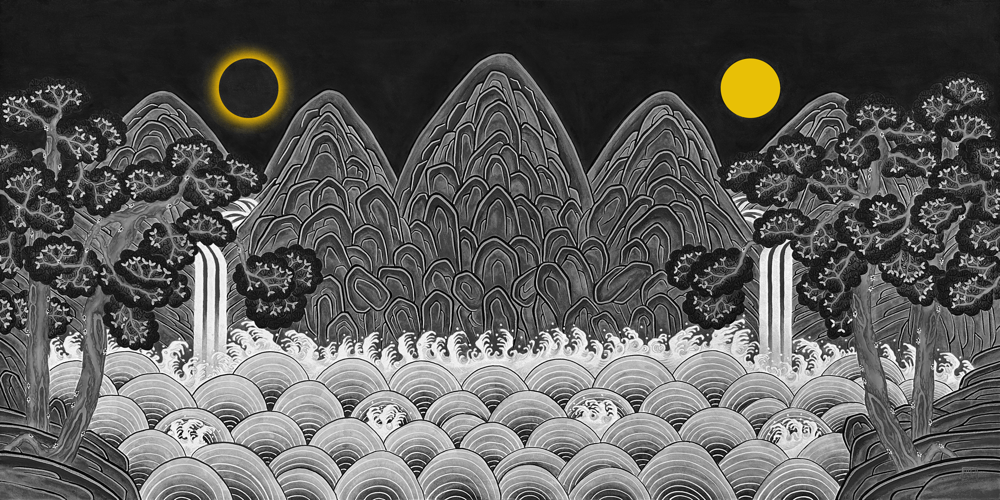

BIO
About
After immigrating to the United States, I began to see memories of Korea reflected in unfamiliar landscapes and everyday objects. A street, a plant, or an ordinary scene would unexpectedly evoke traditional Korean paintings, familiar household objects, or foods from my past. These layered memories revealed that although people are shaped by different cultures and environments, we share fundamental values and a common sense of beauty.
My work explores this relationship between universality and diversity through the idea of Vuja de—the opposite of déjà vu, or experiencing something familiar with a renewed sense of wonder. Depending on each viewer's cultural background, this experience may emerge differently, inviting personal reflection and connection.
I communicate meaning primarily through my choice of subject matter, while traditional Korean materials and techniques convey the emotional and cultural character of the work. Using hanji, natural pigments, and traditional painting methods, I preserve the authenticity of Korean artistic heritage while reinterpreting contemporary American imagery. By discovering newness within the familiar, I hope to foster empathy, encourage cross-cultural dialogue, and remind viewers that beneath our differences lies a shared human experience.
Education
B.A. of Oriental Painting from Hongik University, Seoul, Korea
M.A. of Design Management from IDAS, Hongik University, Seoul, Korea
Awards
2023 'Award of Excellence' (Art San Diego, Redwood group)
2024 2nd place in Water color (Beverly Hills art show)
2025 3rd place, 2026 2nd place in Asian Brush (San Diego county fair)
EXHIBITION
Upcoming
Past
Solo
2024 'Vuja de' (Pacific beach library, San Diego)
2024 'Vuja de' (Sasse Museum of Art, Pomona)
2025 'Sun and Moon' (Gallery YU, San Diego)
2025 'Sun and Moon' (Encinitas Community Center)
2026 'Sun and Moon' (Rancho Penasquitos Library, San Diego)
Group
2022 LA Modern Art Exhibition (Gallery Shatto, LA)
2023 'Wishes from Joseon' (San Diego Central Library)
2024 'Confluence of Scenes' Duo (PCPA, San Diego)
2024 'Art with a Message' (OCCCA, OC)
2024 'ART ventures' (Costa Mesa, CA)
2024 'Illuminated' (Sasse Museum of Art)
2024 'Art within Reach' (Ace Gallery, Torrance)
2025, 2026 San Diego County fair
2026 'Nature Interpreted' (Sasse Museum of Art)
Fair
2022~2025 LA Art Show (LA Convention Center)
2023 Art San Diego 'Award of Excellence' (SD Convention Center)
2024, 2025 Seattle Art Fair (Lumen Field Center)
2024 Fall, 2025 Spring/Fall Beverly Hills Art show (solo, LA)
2025 Studio Art Festival (Irvine)
2025 The Other Art Fair (solo, LA)
2026 Artwalk SD (Little Italy, SD)
MEDIA & PRESS
CONTACT
sihyeonpark.art@gmail.com Instagram